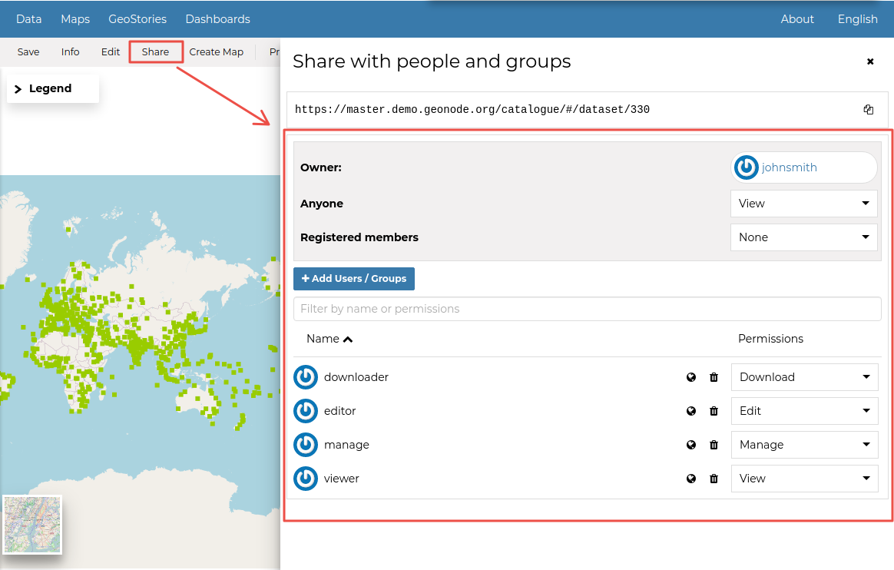
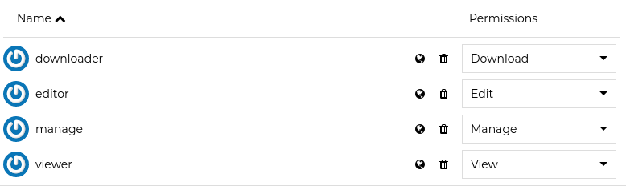
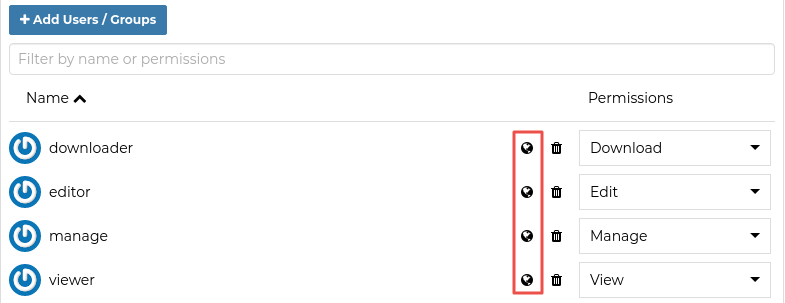
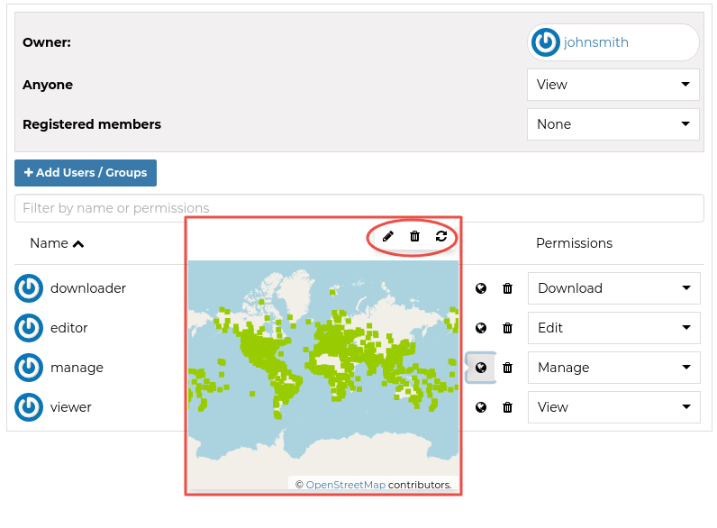
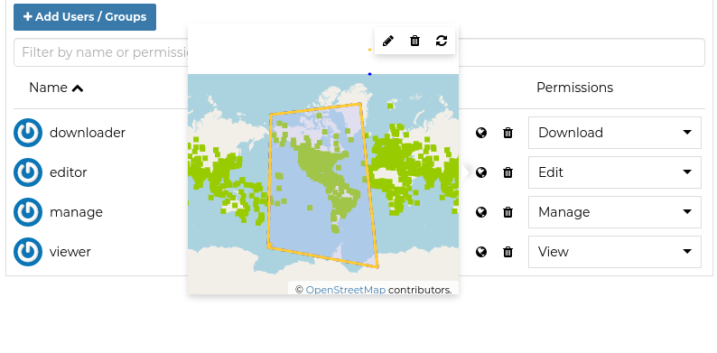
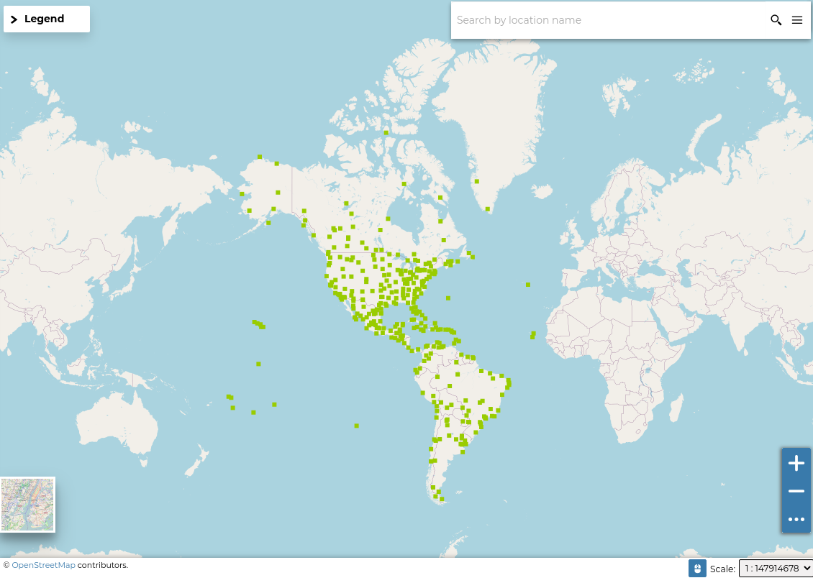

Sharing
Sharing resources¶
Permissions in GeoNode are set per resource, where a resource can be a dataset, a map, a document, a service or a geoapp. The way the permissions are set is the same for all of them.
Warning
GeoNode has a set of default permissions that are applied on resource creation when you don't explicitly declare them. This is particularly relevant when creating and saving a map, where you won't have the possibility to set the its permissions during the creation phase. GeoNode can be tuned to make sure that by default the new created resource are not public, this can be done by changing two settings, see Default view permissions and Default download permissions
Permissions¶
Resource permissions can be generally set from the resource detail page. The detail page has a menu item Share which is visible to people who are permitted to set permissions on a resource. The share link opens a panel on the right to edit user and group permissions on the resource. See picture below:

The panel allows addition of users/groups and selection of a permission to assign each of them.

You can set the following types of permissions:
- View: allows to view the resource;
- Download allows to download the resource;
- Edit: allows to change attributes, properties of the datasets features, styles and metadata for the specified resource;
- Manage: allows to update, delete, change permissions, publish and unpublish the resource.
Warning
When assigning permissions to a group, all the group members will have those permissions. Be careful in case of editing permissions.
Geo Limits permissions¶
Note
This feature is available only when enabling GeoServer as geospatial backend. Also make sure that the properties GEONODE_SECURITY_ENABLED, GEOFENCE_SECURITY_ENABLED and GEOFENCE_URL are correctly set for the OGC_SERVER.
Geo Limits are an extension of the GeoNode standard permissions. Geo Limits allows the owner of the resource, or the administrator, to restrict users or groups to a specific geographical area, in order to limit the access to the dataset to only the portions contained within that geographic restriction, excluding data outside of it.
In order to be able to set Geo Limits you must be an administrator of the system or the owner of the resource or you must have Manage Permissions rights to the resource.
If you have the permissions to set the Geo Limits, you should be able to see the permissions section and the globe icon on each user or group.

You should be able to see an interactive preview of the resource along with few small drawing tools, that allows you to start creating limits on the map manually if you want.
This opens a map dialog, with 3 options at the top:

The icon allows you to draw limits on a map for which a user will be able to see. Click on it to start drawing on the map. Once you are done drawing, click on it again to deactivate drawing mode.
The icon enables you to remove the limits you have drawn. Click on the limit drawn, and then click the delete icon.
The icon removes all changes that are not saved.

Once you finished editing your geometries, save them into the DB using the Save link in the resource menu.
The user with the specified geometries won't be able from now on to access the whole dataset data.

Warning
The Geo Limits will be persisted on GeoNode DB for that resource. That means that everytime you will update the general permissions, also the geospatial restrictions will be applied.
In order to remove the Geo Limits for a certain user or group, you can just Save an empty geometry. This will delete the entry from the DB also.